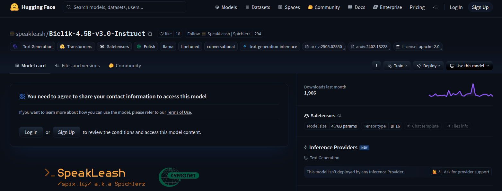

Jak skwantyzować Bielika ?
Model jest dostępny na huggingface
Instalujemy biblioteki i pobieramy chat template

Dla modeli:
speakleash/Bielik-4.5B-v3.0-Instruct
speakleash/Bielik-1.5B-v3.0-Instruct
wymagana jest akceptacja regulaminu.
Ustawiamy token huggingface (tylko dla modeli v3.0 4.5b i
1.5b)
TOOL CALLING - CHAT TEMPLATE ?
TOOL CALLING - CHAT TEMPLATE
TOOL CALLING - KROK 1
ODPOWIEDŹ
TOOL CALLING - KROK 3
CHAT TEMPLATE ?
TOOL CALLING - KROK 3
CHAT TEMPLATE
TOOL CALLING - KROK 3
ODPOWIEDŹ
STRUCTURED OUTPUT - CHAT TEMPLATE ?
STRUCTURED OUTPUT - CHAT TEMPLATE
STRUCTURED OUTPUT - KROK 1
STRUCTURED OUTPUT - KROK 1
ODPOWIEDŹ
STRUCTURED OUTPUT - PARSUJEMY 😉
ComputerSpec(
cpu='Intel Core i7-12700K',
ram_gb=32,
storage_gb=1024,
gpu='NVIDIA GeForce RTX 3080',
os='Ubuntu 22.04')